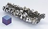

niobium

Has synonym(s): columbium
Definition: Niobium is a chemical element with chemical symbol Nb (formerly columbium, Cb) and atomic number 41. It is a light grey, crystalline, and ductile transition metal. Pure niobium has a Mohs hardness rating similar to pure titanium, and it has similar ductility to iron. Niobium oxidizes in Earth's atmosphere very slowly, hence its application in jewelry as a hypoallergenic alternative to nickel. Niobium is often found in the minerals pyrochlore and columbite, hence the former name "columbium". Its name comes from Greek mythology: Niobe, daughter of Tantalus, the namesake of tantalum. The name reflects the great similarity between the two elements in their physical and chemical properties, which makes them difficult to distinguish.English chemist Charles Hatchett reported a new element similar to tantalum in 1801 and named it columbium. In 1809, English chemist William Hyde Wollaston wrongly concluded that tantalum and columbium were identical. German chemist Heinrich Rose determined in 1846 that tantalum ores contain a second element, which he named niobium. In 1864 and 1865, a series of scientific findings clarified that niobium and columbium were the same element (as distinguished from tantalum), and for a century both names were used interchangeably. Niobium was officially adopted as the name of the element in 1949, but the name columbium remains in current use in metallurgy in the United States.
Source: Wikipedia
Wikipedia Page (Something wrong with this association? Let us know.)
Wikidata Page (Something wrong with this association? Let us know.)